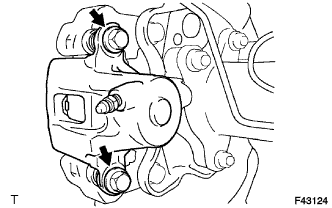
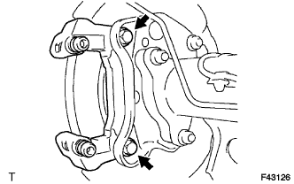

REAR BRAKE > REMOVAL |
| 1. REMOVE REAR WHEEL |
| 2. DRAIN BRAKE FLUID |
| 3. DISCONNECT REAR FLEXIBLE HOSE LH |
 |
Remove the union bolt and gasket from the rear disc brake cylinder, and then disconnect the flexible hose from the rear disc brake cylinder.
| 4. REMOVE REAR DISC BRAKE CYLINDER ASSEMBLY LH |
|  |
Remove the 2 cylinder slide pins from the rear disc brake cylinder.
Remove the rear disc brake cylinder from the rear disc brake cylinder mounting.
| 5. REMOVE REAR DISC BRAKE PAD |
Remove the 2 rear disc brake pads together with the rear disc brake anti-squeal shims from the rear disc brake cylinder mounting.
| 6. REMOVE REAR DISC BRAKE ANTI-SQUEAL SHIM |
Remove the 2 rear disc brake anti-squeal shims from the rear disc brake pads.
| 7. REMOVE REAR DISC BRAKE PAD WEAR INDICATOR PLATE |
Remove the rear disc brake pad wear indicator plate from the inner disc brake pad.
| 8. REMOVE REAR NO. 1 DISC BRAKE PAD SUPPORT PLATE |
Remove the 2 rear No. 1 disc brake pad support plates from the rear disc brake cylinder mounting.
| 9. REMOVE REAR NO. 2 DISC BRAKE PAD SUPPORT PLATE |
Remove the 2 rear No. 2 disc brake pad support plates from the rear disc brake cylinder mounting.
| 10. REMOVE REAR DISC BRAKE CYLINDER MOUNTING LH |
|  |
Remove the 2 bolts, 2 plate washers and rear disc brake cylinder mounting.
| 11. REMOVE REAR DISC BRAKE BUSH DUST BOOT |
Remove the rear disc brake bush dust boot from the rear disc brake cylinder mounting.
| 12. REMOVE REAR DISC BRAKE CYLINDER SLIDE BUSH |
Remove the rear disc brake cylinder slide bush from the rear disc brake cylinder mounting.
| 13. REMOVE REAR DISC BRAKE CYLINDER HOLE PLUG |
Remove the rear disc brake cylinder hole plug from the rear disc brake cylinder mounting.
| 14. REMOVE REAR DISC |
 |
Place matchmarks on the rear disc and axle hub if planning to reuse the disc.
| *1 | Matchmark |
 |
Turn the shoe adjuster until the disc turns freely, and then remove the disc.
 | Shoe Adjuster Contracts |
 | Shoe Adjuster Expands |